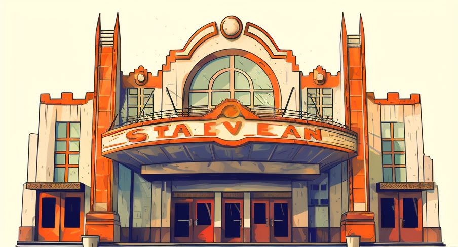
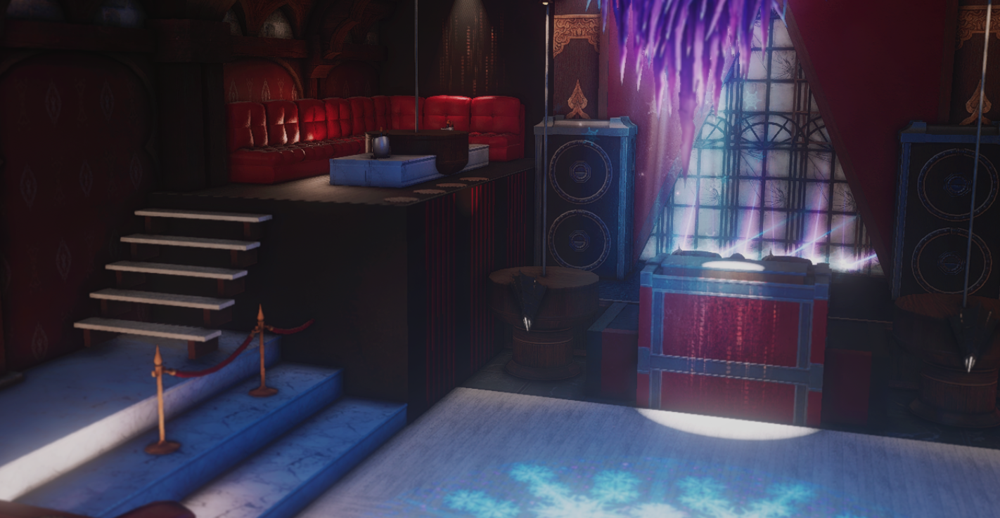

♥ Emily Adams ♥
Howdy there! I'm Emily, a 30-year-old gal hailing from the beautiful state of Tennessee. As a seasoned junior developer, I've been on an incredible coding adventure for the past few months, and I'm excited to share my story and accomplishments with you!
Now, let me take you on a journey through my professional ventures. Over the years, I've explored diverse fields and embraced various job opportunities. From working at local businesses to delving into corporate environments, each experience has shaped my skills and provided a unique perspective on the working world.
Equipped with a degree in Business Administration, with a focus on Accounting, I bring a blend of analytical thinking and creative problem-solving to my coding projects. It's fascinating how my background in numbers and strategy intertwines with the world of coding, allowing me to approach challenges with a fresh outlook.
Speaking of coding, it's truly amazing how far I've come with self-teaching! I never attended an official training program or coding school, but my passion and determination have propelled me forward. Through countless hours of exploration, tinkering, and pushing boundaries, I've managed to bring to life some pretty impressive projects that I'm genuinely proud of.
Now, let's turn the spotlight to the things I adore. First and foremost, I'm a cat enthusiast. There's something magical about their independent yet affectionate nature that melts my heart. Curling up with a furry friend after a long day of coding brings a sense of comfort and tranquility to my soul.
When I'm not immersed in lines of code, you'll often find me immersed in virtual worlds, diving into epic video game adventures. From exploring vast open landscapes to engaging in strategic battles, gaming allows me to unwind and unleash my creative spirit.
Living in Tennessee has blessed me with an abundance of natural wonders, and I make it a point to spend time outside whenever possible. Whether it's hiking through the Great Smoky Mountains or enjoying a leisurely stroll along the Tennessee River, being surrounded by nature renews my spirit and invigorates my creativity.
Ah, the aroma of freshly brewed coffee! Tennessee has its fair share of charming local coffee shops, and I love discovering new gems to satisfy my caffeine cravings. The rich flavors and cozy ambiance create the perfect atmosphere for me to brainstorm ideas and fuel my coding endeavors.
And of course, wanderlust runs deep within me. Whether it's embarking on a road trip to explore hidden gems in Tennessee or jetting off to far-flung destinations, traveling is an integral part of my life. Immersing myself in different cultures, trying new cuisines, and soaking in breathtaking landscapes ignites a sense of adventure within me and broadens my horizons.
So, that's a glimpse into my coding journey and the passions that define me as a 30-year-old Tennessee girl. I hope this snapshot of my life has brought a touch of Southern charm and painted a vivid picture of who I am and what I love. Y'all come back now, ya hear?
These are the jobs i had
-

My very first job was during high school when I worked with my friends at the cinema.
-

I worked a few hours a week at a flea market as general staff for a long period of time.
-
After high school, I spent the summer working on a farm, assisting my friend's mother in taking care of her children and managing the household while the boys worked outside.
-
My sister got me a part time job with her, working for Intuit, during a busy season for a few months.
here are some of the things i have made with code recently
-

Miqo Sim (WiP)
This is a game my boyfriend and I are working on together! this is the BEST thing i ever made so far o:
Play -
-
Silly Resort
i made this web when i was learning to code. it is not finished n has a few bugs.
Travel -
Candy Cakes
Here is another project i made when i was in code school. This is about cupcakes o.o
Yumm